Manual de uso
Como preencher o Relatório Semanal de Fiscalização e gerar a apresentação .pptx no modelo oficial ISA / SGS.
Acesse: rsf-sgs.vercel.app
Antes de começar
O RSF Online substitui a montagem manual do Relatório Semanal de Fiscalização no PowerPoint. Você preenche os dados da semana no navegador, envia as imagens e fotos, e o sistema gera o arquivo .pptx no padrão oficial ISA / SGS, com fundo, títulos e numeração de páginas prontos.
1. Capa
2. Status do Projeto
3. Momento Segurança
4. Atividades / Curva S
5. Fatos Relevantes
6. Atrasos / Previsões
7. Curva S (gráfico)
8. Cronograma (imagem)
9. Registros Fotográficos
10. Prévia e páginas de continuação
11. Gerando a apresentação
12. Dúvidas frequentes
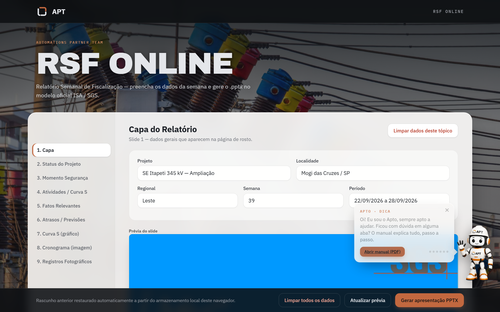
Cada aba do menu lateral corresponde a um slide do relatório, na mesma ordem do documento. Abaixo dos campos de cada aba fica a prévia do slide. Na barra inferior estão os botões para limpar os dados, atualizar a prévia e gerar a apresentação. No canto, o Apto mostra dicas — clique nele para abrir este manual.
Passo 1 e 2
Preencha as abas de cima para baixo. Cada aba tem o botão Limpar dados deste tópico, que apaga só aquela aba.
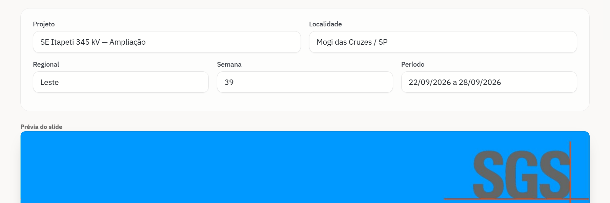
| Campo | Como preencher |
|---|---|
| Projeto · Localidade | Nome do empreendimento e cidade/UF. Aparecem na página de rosto e no nome do arquivo. |
| Regional · Semana · Período | Regional do projeto, número da semana e o intervalo de datas (ex.: 22/09/2026 a 28/09/2026). |
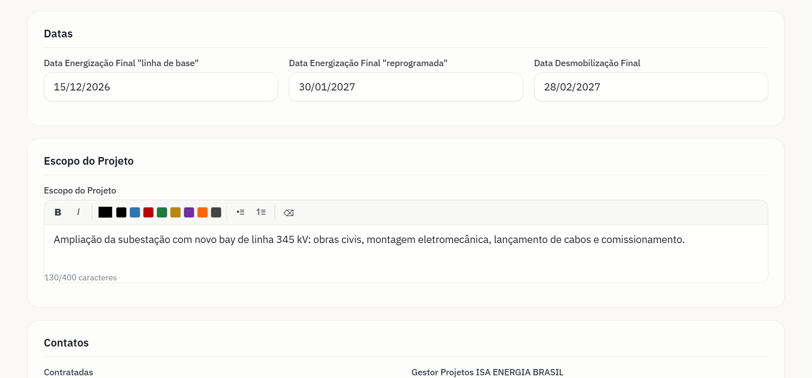
| Campo | Como preencher |
|---|---|
| Datas | Energização final (linha de base e reprogramada) e desmobilização final. |
| Escopo do Projeto | Até 400 caracteres. O contador abaixo da caixa mostra quanto já foi usado; ao chegar no limite a digitação para e textos colados são cortados. Se houver muitas quebras de linha, um aviso em vermelho indica que a fonte será reduzida no slide. |
Passo 2
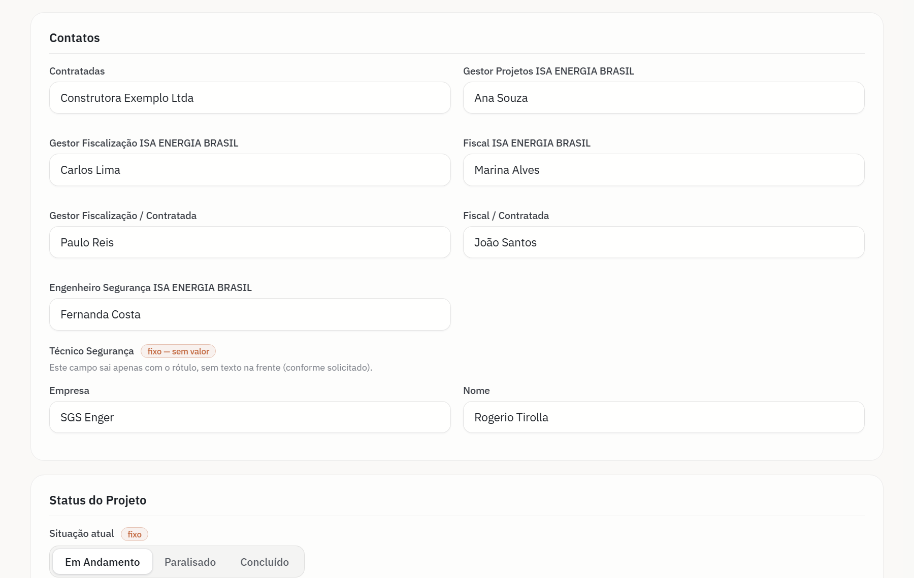
Preencha os nomes de contratadas, gestores, fiscais e segurança. Técnico Segurança sai no slide apenas com o rótulo, sem valor.
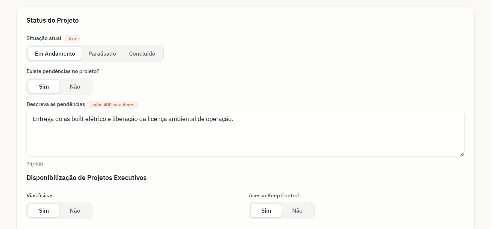
| Campo | Como preencher |
|---|---|
| Situação atual | Em Andamento, Paralisado (abre data, motivo e previsão de retorno) ou Concluído (abre a data de conclusão). |
| Existe pendências no projeto? | Sim ou Não. Com Sim, abre uma caixa para descrever as pendências, com até 400 caracteres. |
| Disponibilização de Projetos Executivos | Vias físicas e acesso ao Keep Control: Sim ou Não. |
Passo 3 e 4
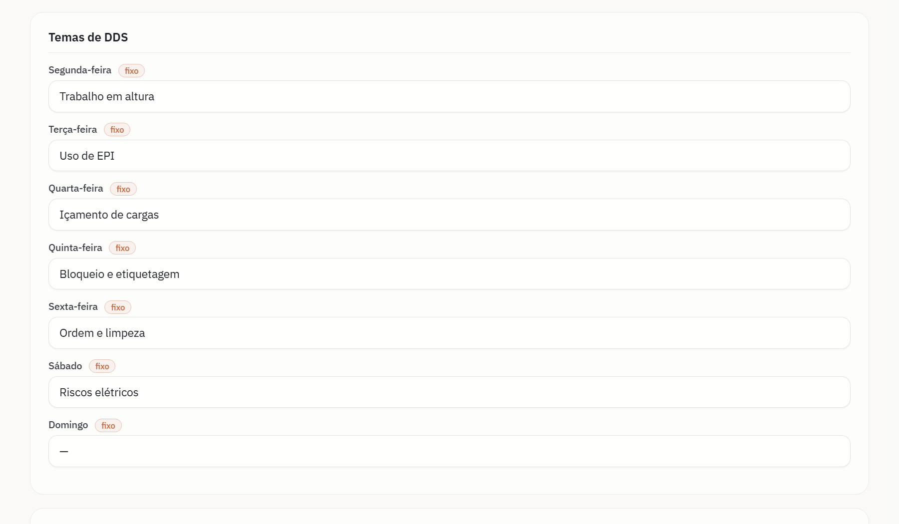
| Campo | Como preencher |
|---|---|
| Temas de DDS | O tema do Diálogo Diário de Segurança de cada dia da semana. |
| Acidente ou Incidente | Uma caixa por ocorrência. Use o ✕ para excluir e + Incluir novo espaço de texto para adicionar. |
| Foto (opcional) | Foto da parada de segurança ou treinamento, com comentário de até 300 caracteres. Entra à direita dos textos. |
| Campo | Como preencher |
|---|---|
| Atividades realizadas | Sim ou Não; se Não, explique o motivo. Informe se o efetivo mobilizado atende às demandas. |
| Cronograma Integrado | Se houve alteração de datas, a data da última revisão e se mudou a data de desenergização. |
| Curva S | Se foi revisada na semana, a data da última revisão e o percentual de avanço. |
Passo 5 e 6
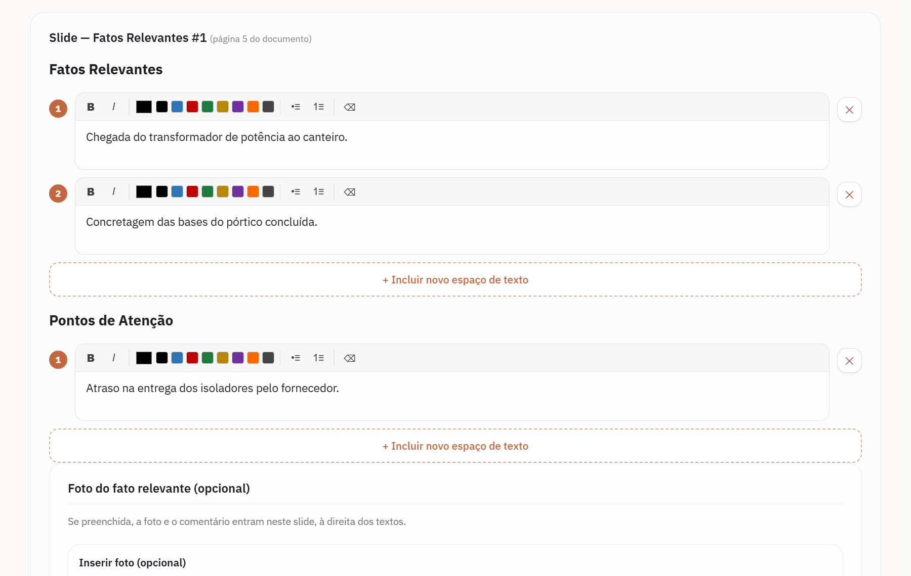
Escreva um item por caixa. A barra de cada caixa permite negrito, itálico, cores e listas. Use + Acrescentar novo slide de Fatos Relevantes para repetir o slide quantas vezes precisar. Cada slide aceita uma foto opcional com comentário.
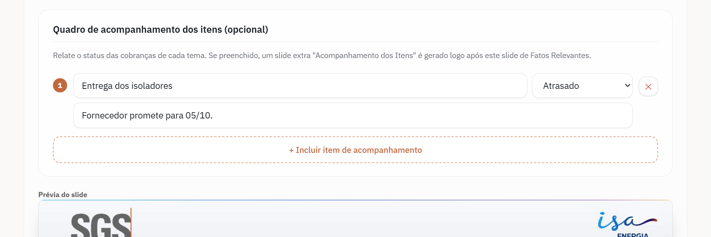
Quadro de acompanhamento (opcional): relate o status das cobranças de cada tema — Pendente, Em andamento, Concluído ou Atrasado. Se preenchido, um slide extra “Acompanhamento dos Itens” é gerado logo após o slide.
Mesmo funcionamento: histórico de atrasos da semana (com data) e previsão de atividades críticas futuras (número da PT, data e status), com foto e quadro de acompanhamento opcionais.
Passo 7 e 8
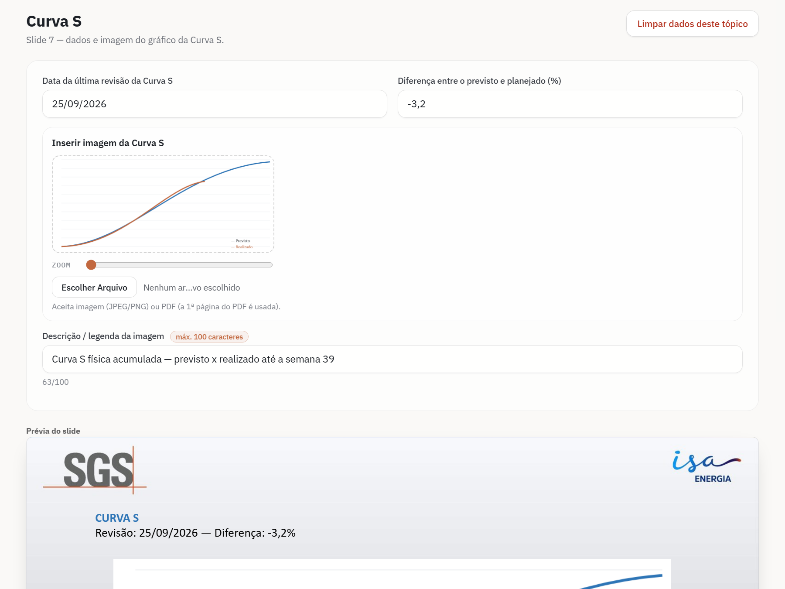
| Campo | Como preencher |
|---|---|
| Data e diferença | Data da última revisão e, na Curva S, a diferença entre previsto e planejado (%). |
| Imagem | Clique no quadro ou em Escolher arquivo. Aceita JPG, PNG ou PDF (exportado do MS Project, Power BI ou Excel — é usada a 1ª página). Use o Zoom e arraste a imagem para enquadrar. |
| Descrição / legenda | Texto curto de até 100 caracteres, impresso centralizado logo abaixo da imagem. |
A aba 8. Cronograma funciona da mesma forma, com a data da última revisão, a imagem do Gantt e a legenda.
Passo 9
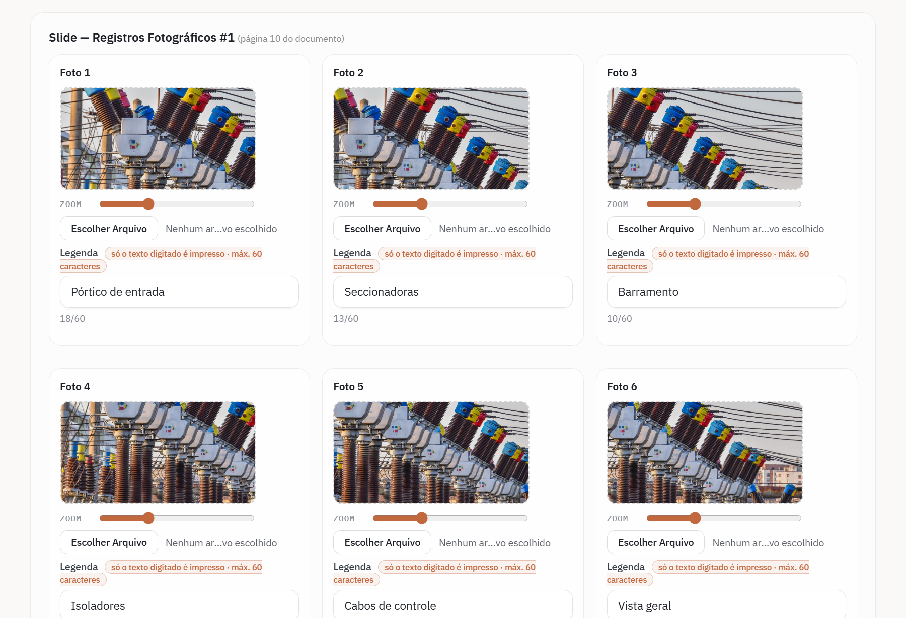
Passo 10
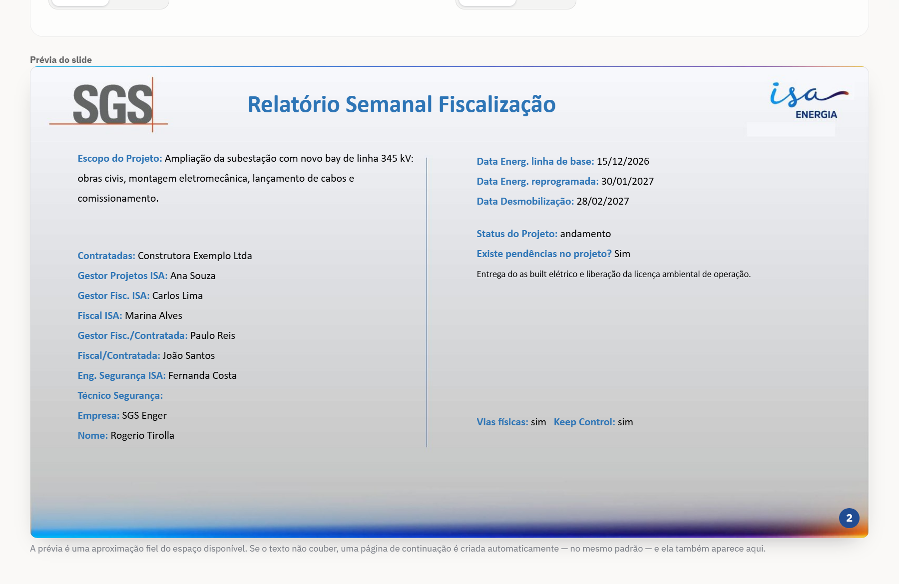
A prévia abaixo de cada aba reproduz o espaço real do slide e é atualizada enquanto você digita. Se ela parecer desatualizada, clique em Atualizar prévia.
Quando o texto de Fatos Relevantes, Atrasos ou Momento Segurança não cabe no slide, o sistema cria automaticamente uma página de continuação, no mesmo padrão e com o título marcado “(continuação)”. Ela também aparece na prévia, e o número das páginas acompanha.
Passo 11
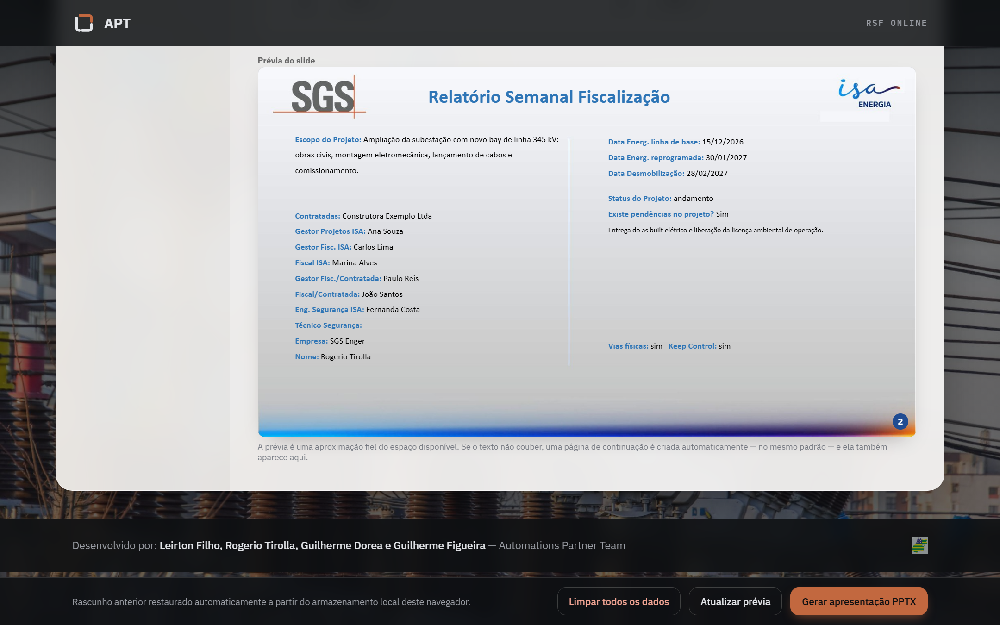
Clique em Gerar apresentação PPTX, na barra inferior. O arquivo é montado no próprio navegador e baixado como RSF_Projeto_Semana.pptx (ex.: RSF_SE_Itapeti_345_kV_Ampliacao_39.pptx). Ao final, a barra mostra o nome do arquivo e o total de páginas.
Limpar todos os dados apaga todas as abas e o rascunho salvo — use ao começar o relatório de uma nova semana.
Passo 12
Não. Reabra o RSF Online no mesmo computador e navegador: o rascunho volta automaticamente. Só as fotos podem precisar ser reenviadas, se o aviso no rodapé pedir.
Recarregue a página (F5) e gere a apresentação novamente.
Não: o rascunho fica só no navegador onde foi preenchido. Gere o .pptx antes de trocar de computador.
Não. Tudo roda no seu navegador; o arquivo é gerado e baixado localmente.